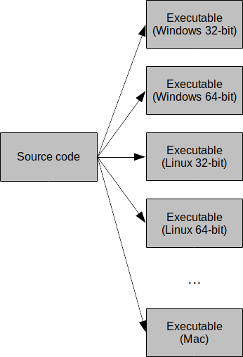
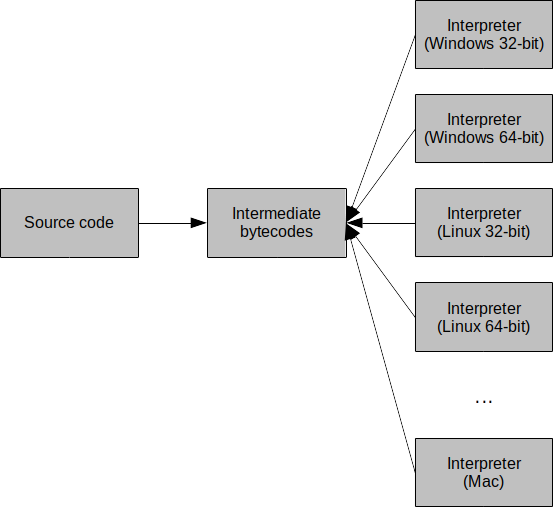
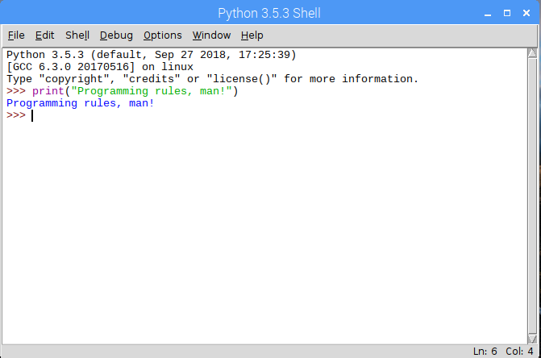
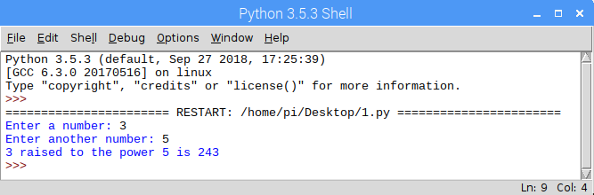
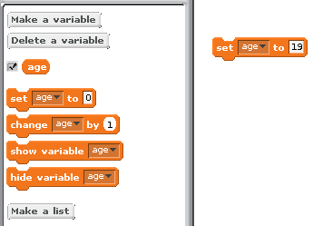
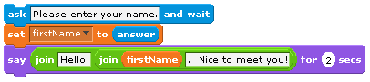

In this lesson, we will build on what you have already learned about the Python programming language. To be sure that we are all on the same page, let’s briefly review the things about Python that you should already be familiar with. For more detail, review the lesson on Introduction to Computer Programming.
2 Data types, constants, and variables
You should know that the kinds of calues that cen be expressed in a programming language are known as its data types. The primitive types of a programming language are those data types that are built-in (or standard) to the language and typically considered as basic building blocks (i.e., more complex types can be created from these primitive types). Python’s standard types can be grouped into several classes: numeric types, sequences, sets, and mappings. You should be familiar with numeric types and sequences (e.g., lists)
You should know that a constant is defined as a value of a particular type that does not change over time. In Python both numbers and text may be expressed as constants. Numeric constants are composed of the digits 0 through 9 and, optionally, a negative sign (for negative numbers), and a decimal point (for floating point numbers). Text constants consists of a sequence of characters (also known as a string of characters – or just a string).
You should know that a variable is defined to be a named object that can store a value of a particular type. Before a variable can be used, its name must be declared.
3 Input and output
You should be familiar with obtaining input (via the input function) and generating output (via the print statement) in Python. Here’s a simple example:
name =input("What is your name? ")print("Hello, {}!".format(name))
4 Operators
You should be familiar with a variety of operators in Python. Specifically, arithmetic operators, relational (comparison) operators, and assignment operators. Arithmetic operators include addition, subtraction, etc, and perform arithmetic operations on operands. Relational operators include comparison of equality, inequality, less-than, and so on, and perform comparisons on operands and return true or false. Assignment operators include operators such as +=, -=, and so on, and combine assignment with arithmetic.
5 Primary control constructs
You should be very familiar with the three primary control constructs: sequence, selection, and repetition. Sequence implies one statement after another. Selection allows blocks of optional statements to be executed. Repetition provides a mechanism for repeating blocks of statements. There are two main forms of repetition that we have covered: iteration and recursion. Iteration involves repeating a task some fixed number of times, until a condition is reached, or over some structure (such as the items in a list). Although recursion was only briefly covered, you should know that it involves breaking a problem down repeatedly into smaller versions of itself until a base or trivial case is reached. We will cover recursion in much more detail later in the curriculum.
6 Subprograms
You should be quite familiar with subprograms and how they can encapsulate behavior in programs. They are organized, reusable, and related statements that perform some action. Specifically, some subprograms perform tasks and terminate; others return a value. You should understand how control flow is transferred to a subprogram when a subprogram is called, and how it is returned when the subprogram terminates
7 A review of program flow
Although you should be familiar with this already, it is so important that we should probably go over it in detail again. It is very important to be able to identify the flow of control in any program, particularly to understand what is going on. In fact, this significantly helps to debug problems in programs. Recall that, in Python, function definitions aren’t executed in the order that they are written in the source code. Functions are only executed when they are called. This is perhaps best illustrated with an example that you have seen before:
1: defmin(a, b):2: if (a < b):3: return a4: else:5: return b6: defmax(a, b):7: if (a > b):8: return a9: else:10: return b11: num1 =int(input("Enter a number: "))12: num2 =int(input("Enter another number: "))13: print("The smaller is {}.".format(min(num1, num2)))14: print("The larger is {}.".format(max(num1, num2)))
Each Python statement is numbered for reference. Lines 1 through 5 represent the definition of the function min. This function returns the minimum of two values provided as parameters. Lines 6 through 10 represent the definition of the function max. This function returns the maximum of two values provided as parameters. Lines 11 through 14 represent the main part of the program. Although the Python interpreter does see lines 1 through 10, those lines are not actually executed until the functions min and max are actually called. The first line of the program to actually be executed is line 11. In fact, here is the order of the statements executed in this program if num1 = 34 and num2 = 55:
\[ 11,12,13,1,2,3,14,6,7,9,10 \]
Let’s explain. Line 11 asks the user to provide some value for the first number (which is stored in the variable num1). Line 12 asks the user to provide some value for the second number (which is stored in the variable num2). Line 13 displays some text; however, part of the text must be obtained by first calling the function min. This transfers control to line 1 (where min is defined). The two actual parameters, num1 and num2, are then passed in and mapped to the formal parameters defined in min, a and b. Then, line 2 is executed and performs a comparison of the two numbers. Since a = 34 and b = 55, then the condition in the if-statement is true. Therefore, line 3 is executed before control is transferred back to the main program with the value of the smaller number returned (and then control continues on to line 14). Note that lines 4 and 5 are never executed in this case!
Line 14 is then executed and displays some text. Again, part of the text must be obtained by first calling the function max. This transfers control to line 6 (where max is defined). The variables a and b take on the values 34 and 55 respectively. Line 7 is then executed, and the result of the comparison is false. Therefore, line 8 is not executed. Control then goes to line 9, and then to line 10 which returns the larger value. The program then ends.
Activity
What is the order of execution if num1 = 55 and num2 = 34?
What if num1 = 100 and num2 = 100?
Here’s another example with a simple for loop:
1: for a inrange(1, 4):2: for b inrange(1, 5):3: print("{} * {} = {}".format(a, b, a * b))
This snippet of code displays a portion of a multiplication table. In fact, run this to see the output:
for a inrange(1, 4):for b inrange(1, 5):print("{} * {} = {}".format(a, b, a * b))
Here’s the order of the statements executed. To make things a bit more clear, it is grouped and highlighted:
The first portion (highlighted in red and labeled 1 * n) represents a single iteration of the outer for loop and a full iteration of the inner for loop. It generates the following output:
1 * 1 = 1
1 * 2 = 2
1 * 3 = 3
1 * 4 = 4
Let’s explain. Line 1 of the outer for loop generates the list [ 1, 2, 3 ]. It then iterates over the values in the list with the variable a taking on each value, one at a time. Initially, a = 1. Line 2 represents the inner for loop and generates the list [ 1, 2, 3, 4 ], and iterates over its values with the variable b taking on each value, one at a time. Initially, b = 1. Line 3 then displays the first line of output: \(1 * 1 = 1\). This makes sense because a and b are both 1.
So far, the order of statements executed is 1, 2, 3. Note that the inner for loop iterates its complete cycle (i.e., through the entire generated list) for each iteration of the outer for loop. Therefore, the inner for loop iterates through the list [ 1, 2, 3, 4 ] for each value in the outer for loop’s list [ 1, 2, 3 ]. After line 3 (when a and b are both 1), the inner for loop then iterates to the next value in the list. Therefore, line 2 is executed again so that b = 2. Similarly, line 3 executes again, generating the output: \(1 * 2 = 2\). At this point, the order of statements executed is 1, 2, 3, 2, 3.
The inner for loop continues iterating two more times (lines 2 and 3), setting b to 3 and then to 4. After the first full iteration of the outer for loop, the order of statements executed is 1, 2, 3, 2, 3, 2, 3, 2, 3. So when a = 1, b goes through the values 1, 2, 3, and 4. The output generated at this point is then:
1 * 1 = 1
1 * 2 = 2
1 * 3 = 3
1 * 4 = 4
Since the inner for loop has finished a full iteration, control goes back to line 1, thereby allowing the outer for loop to iterate to the next value in the list so that a = 2. Line 2 is executed again, generating a new list [ 1, 2, 3, 4 ] and setting b to 1. Similarly, line 3 is executed again, generating the output: \(2 * 1 = 2\). Lines 2 and 3 are executed as before, for each value in the inner loop’s list [ 1, 2, 3, 4 ]. Of course, this generates exactly the same order of statements as before: 1, 2, 3, 2, 3, 2, 3, 2, 3. However, this represents the second iteration of the outer loop.
Since the inner for loop has finished another full iteration, control goes back to line 1, thereby allowing the outer for loop to iterate to the next value in the list so that a = 3. Again, lines 2 and 3 are executed as before, for each value in the inner loop’s list [ 1, 2, 3, 4 ]. Clearly, this generates exactly the same order of statements as before: 1, 2, 3, 2, 3, 2, 3, 2, 3. This time, it represents the third (and final) iteration of the outer loop. Why? Because the outer for loop has iterated through the entire list [ 1, 2, 3 ]. After this final iteration, the variable a has taken on all of these values. Therefore, the outer for loop is exited, and the program terminates.
Again, knowing the order in which statements are executed is crucial to debugging programs and ultimately to creating programs that work.
This concludes a review of what you should already know in Python. From here, we’ll introduce new content.
8 Formal vs actual parameters
You have seen that a function can have parameters. These parameters are formally stated when the function is defined; for example:
def average(a, b):return (a + b) /2.0
Here, the variables a and b are formally defined as parameters that must be passed in to the function average when it is called. In this context, the variables a and b are called formal parameters. It is where they are defined (in a formal manner).
Definition
Formal parameters are formally defined as part of the function header
Now consider a point in the source code where this function is called; for example:
avg = average(11, 67)
Here, the result of a call to the function average with the supplied values (or parameters) 11 and 67 is stored in the variable avg. These values, 11 and 67, are considered actual parameters in this context. That is, they are the actual values that will be passed in as parameters to the function average.
Definition
Actual parameters (or arguments) are the actual values that are passed into a function.
In fact, they are mapped to the formally defined parameters (i.e., formal parameters) a and b in the function average. That function will use these values to make calculations and return the average of the two. The value returned replaces the function call. Think of this replacement as follows:
avg = average(11, 67) 39.0
Therefore, the variable avg is assigned the value 39.0 after the call to the function average is complete. Consider this call to the same function:
x =11y =67avg = average(x, y)
Here, the result is still the same. The average of the two variables, x and y (with the values 11 and 67 respectively), is stored in the variable avg. Here, x and y are also actual parameters (even if they are variables themselves) because they represent the actual values supplied to the function average.
9 Variable scope
Consider the following Python program snippet and its output:
a =10def f(x): a =11 b =21 x *=2print("in f(): a={}, b={}, x={}".format(a, b, x))b =20f(b)print("in main: a={}, b={}".format(a, b))def g():global a a *=1.5print("in g(): a={}, b={}".format(a, b))g()print("in main: a={}, b={}".format(a, b))
in f(): a=11, b=21, x=40
in main: a=10, b=20
in g(): a=15.0, b=20
in main: a=15.0, b=20
The variables a and b are considered global variables
Definition
Global variables are accessible throughout the entire program because they are defined outside of any block context (e.g., a loop construct, a function, etc). Global variables can be accessed anywhere. Their scope is global (i.e., throughout the entire program).
Definition
A variable’s scope is the region of code that variable is accessible in.
Take a look at the output of the program above:
in f(): a=11, b=21, x=40
in main: a=10, b=20
in g(): a=15.0, b=20
in main: a=15.0, b=20
Let’s explain the output. Initially, the variable a is assigned the value 10. The next segment of code defines the function f. This is only a definition (i.e., the statements are not actually interpreted or executed at this point). Then, the variable b is assigned the value 20. What follows is a call to the function f, passing the variable b as an actual parameter. Control is then transferred to the function f, whose statements are now executed. Note that, to the function f, the variable x is the formal parameter that takes on the value passed in (from the variable b). So the variable x is now equal to the value of the variable b (i.e., 20) that was passed in at the point of the call to f. Note that the variable x is local to the function f; therefore, it is considered a local variable. That is, it is defined in f and only accessible in f – its scope is valid only in the function f.
Definition
A local variable is a variable defined in (and therefore only accessible in) a local region/context. For example, a variable defined inside a function is local to that function and therefore only accessible within that function.
Also note that, although a and b are global, there are local versions declared in f. It is important to note that these are different variables than the global versions – even if they have the same name!
A computer can only understand machine language. Machine language instructions are entirely made up of binary digits and can be directly executed by the CPU. Since we have a particularly hard time understanding 1s and 0s, early programmers assigned a set of mnemonics to represent machine code instructions so that they would be a bit more readable. This mapping became known as assembly language. People still write code in assembly language, but it is not typically used to create large scale applications.
Definition
Shadowing is the process of introducing a local variable that shares the same name as a global variable. This local variable “shadows” (or hides) access to the global variable of the same name. We will see this concept appear again later in the course, but with a different context
So what happens in f? The local variable a is initialized with the value 11, the local variable b is initialized with the value 21, and the local variable x (which is passed in as an argument with the value 20) is doubled to 40. The output of the function f is then clear:
in f(): a=11, b=21, x=40
Once f completes and control is transferred back to the point at which function f was called, the variable x is no longer accessible! In fact, let’s alter the print statement immediately after the call to f from:
in f(): a=11, b=21, x=40
Traceback (most recent call last):
File "scope.py", line 11, in <module>
print("in main: a={}, b={}, x={}".format(a, b, x))
NameError: name 'x' is not defined
Notice the error indicating that the variable x is not defined. That’s because it was defined in f; however, the current context is outside of f. The variable x is no longer available once f finishes and control is transferred back to the main part of the program.
Let’s replace the print statement to remove the error and explain the rest of the output from the original execution of the program:
in main: a=10, b=20
in g(): a=15.0, b=20
in main: a=15.0, b=20
Once control is transferred back to the main part of the program, the local variables a and b (in f) no longer exist. However, the global variables a and b do! They were initialized to 10 and 20 respectively. Therefore, the next line of output makes sense:
in main: a=10, b=20
The next part of the program defines another function, g, that is then called. Note the global keyword in the function g. This instructs Python to reference a globally defined version of the variable that follows the global keyword. That is, a local version is not defined and/or initialized. Instead, the global version is directly referenced. Moreover (and quite importantly), it permits the global version to be changed. Although there are no arguments to the function g, the global variable a is directly modifiable through the global keyword. When the statement a *= 1.5 is executed, the value of the global variable a is 10. This statement changes its value to 15.0, directly updating the variable’s value – globally!
Note the print statement in g. It refers both to the variables a and b. A reference to the variable a makes sense; however, the variable b is also accessible. In fact, the variable b is referencing the global version of b, similar to the variable a (i.e., it is directly readable). The difference in using the global keyword is that it permits a change to the variable; without it, it can only be utilized in a read-only manner. Since the global variable b is initialized with the value 20, the output in g is clear:
in g(): a=15.0, b=20
When control is transferred back to the main part of the program, changes to global variable a persist (even if they were changed in a function!):
in main: a=15.0, b=20
To illustrate this even more, let’s slightly change the function g as follows:
def g():global a a *=1.5 b =40print("in g(): a={}, b={}".format(a, b))
Note the slight difference: b is declared and initialized with the value 40. Which b is this? Is it a local version (i.e., local to g)? Or is it referring to the global version declared in the main part of the program? Recall that, without the global keyword, a global variable can not be modified. Therefore, an assignment statement in a function to a variable that has the same name as a global variable indicates that the variable is a new instance, defined locally in the function. This is a different variable b! The output in g is clear:
in g(): a=15.0, b=40
When control is transferred back to the main part of the program, the local version of b disappears. All that’s left is the global version (that remains unchanged at 20). Therefore, the output in the main part of the program is also clear:
in main: a=15.0, b=20
10 A review of the Python list
Although you should be familiar with Python lists, they are quite important and used often; therefore, we will go over it again. Generally, a Python sequence is composed of (typically related) elements. Each element in a sequence is assigned an index (or position). A sequence with n elements has indexes 0 to n–1. Python has many built-in types of sequences; however, the most popular is called the list. The list in Python is quite versatile. Recall that a list is declared using square brackets; for example:
grades = [ 94, 78, 100, 86 ]
The statement above declares the list grades with four integers: 94, 78, 100, and 86. The list can be displayed in its entirety (e.g., with the statement print(grades)); however, we can access each element individually by its index (specified within brackets). Accessing can mean to read a value in the list, or it can mean to change a value in the list; for example:
print(grades[0])grades[3] =87grades[1] +=2
Recall that more than one value in a list can be accessed at a time. We can specify a range (or interval) of indexes in the format [lower:upper+1] which means the interval [lower, upper) (i.e., closed at lower and open at upper). That is, the lower index in the range is inclusive but the upper is not. For example:
stuff[3:4] # accesses index 3 (the same as stuff[3])stuff[0:5] # accesses indexes 0 through 4stuff[-3] # accesses the third index from the right
Also recall that list elements can be deleted with the del keyword as follows:
del stuff[2]
Finally, recall that Python provides several built-in operations that can be performed on lists. Here are many of them:
List Operators
Operation
Description
len(list)
Returns the length of a list
max(list)
Returns the item in the list with the maximum value
min(list)
Returns the item in the list with the minimum value
list.append(item)
Inserts item at the end of the list
list.count(item)
Returns the number of times an item appears in the list
list.index(item)
Returns the index of the first occurrence of item
list.insert(index, item)
Inserts an item at the specified index in the list
list.remove(item)
Removes the first occurrence of item from the list
list.reverse()
Reverses the items in the list
list.sort()
Sorts a list
11 Revisiting searching and sorting in Python
In previous lessons, we designed several searching algorithms (sequential/linear search and binary search) and sorting algorithms (bubble sort, selection sort, and insertion sort). We first specified them in pseudocode, and for some we showed how they could be implemented in Python (sequential search, binary search, and selection sort). To help get a better understanding of Python, let’s briefly revisit some of these.
First, here’s the sequential search for the smallest value in a list (from an earlier lesson). Note that a Python list is first populated with 20 random integers (from 1 to 99, also from an earlier lesson):
1: from random import randint2: numbers = []3: while (len(numbers) <20):4: numbers.append(randint(1, 99))5: print(numbers)6: minIndex =07: for index inrange(1, len(numbers)):8: if (numbers[index] < numbers[minIndex]):9: minIndex = index10: print("The smallest value is at index: {}".format(minIndex))11: print("The smallest value is: {}".format(numbers[minIndex]))
This version of the sequential search technically returns the index of the smallest value (which is typically what programmers are interested in). Since the value can be easily accessed through the index, returning the index is much more meaningful. To generalize the sequential search so that it can return the index of a specified value (as opposed to the smallest value), it can be modified by replacing lines 6 through 11 as follows:
num =int(input("What integer would you like to search for? "))for index inrange(len(numbers)):if (numbers[index] == num):print("The value {} was found at index {}!".format(num, index))
What happens if the specified value is duplicated several times in the list? Clearly, each index would be displayed. Here’s example (with user input in bold):
[20, 47, 80, 52, 98, 80, 1, 14, 31, 48, 70, 31, 97, 30, 31, 43, 59, 2, 38, 50] What integer would you like to search for?31 The value 31 was found at index 8! The value 31 was found at index 11! The value 31 was found at index 14!
But what if it’s only necessary to find the first occurrence of a specified value (and then abort)? Python provides a way to exit a repetition construct early (a.k.a. an “early exit”) through the break keyword! Formally, the break keyword exits the nearest enclosing repetition construct. More on this in a bit. To illustrate the use of the break keyword, the sequential search code above can be modified to return only the first instance of a specified value:
for index inrange(len(numbers)):if (numbers[index] == num):print("The value {} was found at index {}!".format(num, index))break
Here’s an example:
[87, 44, 37, 69, 92, 74, 49, 97, 65, 69, 27, 61, 22, 77, 3, 3, 25, 86, 53, 45] What integer would you like to search for?3 The value 3 was found at index 14!
Note that the value 3 occurs twice in the list (at index 14 and index 15); however, only the first instance is reported to the user before the search terminates. The break statement exits the enclosing repetition construct: in this case, the for loop.
What if the break keyword is located in a repetition construct that is also located inside of another repetition construct? In this case, it will exit the inner repetition construct only. Here’s an example and output:
for i inrange(2):print("i={}".format(i)),for j inrange(5):print("j={}".format(j)),if (j >1):breakprint()
i=0
j=0
j=1
j=2
i=1
j=0
j=1
j=2
The outer for loops iterates i from 0 through 1. The inner for loop iterates j from 0 through 4. Moreover, the inner for loop exits early if j is greater than 1. Technically, the print statement in the inner for loop will display values of j that are less than or equal to 1. So why is a value of 2 for j displayed? When j is 2, the value is displayed, after which the if statement is executed (which breaks out of the inner for loop). The outer for loop continues (the lone print() statement is there to add a line break in between increasing values of i), and i becomes 1. This occurs again until the outer for loop terminates (when i is 2).
Let’s now take a look at the binary search that was also covered in an earlier lesson. Recall that it is a very efficient search that requires a list to be sorted. Here’s the Python code that was developed in an earlier lesson:
num =int(input("What integer would you like to search for? "))found =Falsefirst =0last =len(numbers) -1while (first <= last and found !=True): mid = (first + last) //2if (num == numbers[mid]): found =Trueelif (num > numbers[mid]): first = mid +1else: last = mid -1if (found):print("{} was found at index {}!".format(num, mid))else:print("{} was not found.".format(num))
This version of the binary search keeps tracks of two boundaries (first and last) that identify the beginning and end indexes of the current portion of the list. Initially, first is 0 and last is n-1 (i.e., the entire list). If the middle value of the current portion of the list does not match the specified value, the appropriate half of the list is “discarded” by modifying either first (to discard the left half) or last (to discard the right half).
Recall that the binary search required a list to be sorted, thereby taking advantage of the algorithm’s efficiency improvement over the sequential search. Here’s the selection sort that was developed in an earlier lesson:
n =len(numbers)for i inrange(0, n -1): minPosition = ifor j inrange(i +1, n):if (numbers[j] < numbers[minPosition]): minPosition = j temp = numbers[i] numbers[i] = numbers[minPosition] numbers[minPosition] = temp
Recall how the selection sort works: (1) the list is sorted from left to right; (2) at each pass (controlled by the outer for loop), the smallest value is swapped with the first item in the unsorted portion of the list; and (3) the inner for loop performs the comparison of every remaining item in the unsorted portion of the list to find the smallest value. For a review, see the lesson on Searching and Sorting.
There were two other sorting algorithms that were covered in earlier lessons: bubble sort and insertion sort. We never developed Python code for them. Let’s do this now. First, the bubble sort. Here is a version in pseudocode:
for i ← 1..list length-1
for j ← 1..list length-i
if item j of list < item j-1 of list
then
temp ← item j of list
item j of list ← item j-1 of list
item j-1 of list ← temp
end
next
next
You may not have seen a for loop described in pseudocode before; however, this is a common way to accomplish this repetition construct in pseudocode. So what’s happening here? The basic idea is that a value in the list will be compared to the one before it. If they are out of order, then they are swapped. This continues, one index over (to the right), until the end of the list is reached. After the first pass, the largest value is guaranteed to be in its final position (i.e., at the end of the list). The next pass starts again at the beginning of the list; however, this time comparisons and swaps only take place until the second-to-last value in the list (because the last value has already been placed there during the last pass). Each time, the sorted list grows from right-to-left until the entire list is sorted.
The outer for loop controls the number of passes, while also providing a way to reduce the size of the unsorted portion of the list after each pass. It iterates from 1 through n-1. The inner loop controls the comparisons and swaps. Initially, the inner loop begins at 1 (the index of the second value in the list), and compares this value to the one before it (the first value in the list). If they are out of order, they are swapped. The swap works by using a variable (temp) that temporarily takes on one of the values in the list. This continues with the next index (i.e., 2), and so on. The last index compared is n-i. If the algorithms is in the first pass (i.e., i is 1) and the length of the list is 10, the last valid index in the list is \(10 – 1 = 9\).
Let’s take a look at what a Python version of the bubble sort looks like:
n =len(list)for i inrange(1, n):for j inrange(1, n - i +1):if (list[j] <list[j -1]): temp =list[j]list[j] =list[j -1]list[j -1] = temp
Recall that Python’s range function uses the first parameter as a lower bound and the second parameter as one above the upper bound. That is, it operates on the interval [a, b), where a is the (closed) lower bound and b is the (open) upper bound. Therefore, the upper bound of the outer loop is n: it iterates from 1 through (and including) n-1 as intended. Similarly, the upper bound of the inner loop is n-i+1: it iterates from 1 through (and including) n-i as intended. In the inner loop, if any value at an index is less than the value of the one before it, they are swapped.
Next, let’s take a look at the Python code for the insertion sort. Recall that the insertion sort works somewhat as you would arrange a hand of cards being dealt to you: a new card is inserted in its appropriate position in the hand of cards dealt so far.
1: i =12: while (i < n):3: if (list[i -1] >list[i]):4: temp =list[i]5: j = i – 16: while (j >=0andlist[j] > temp):7: list[j +1] =list[j]8: j -=19: list[j +1] = temp10: i +=1
Here’s an explanation of the code. Line 2 controls the number of passes through the list (n-1 total passes). The variable i is initialized to 1 (the second index in the list) and iterates through (but not including) n; therefore, through the last index in the list. So, starting with the second value in the list, it looks to the left (of this current value). Line 3 checks if that value is greater, and if so, then it must move it to the right. Line 4 temporarily stores the current item, and lines 5 and 6 then begin the process of iterating from the previous element, continuing to the left. At any point, if a value to the left is greater than the current item, it is shifted one index to the right. This continues either until (1) the beginning of the list is reached; or (2) a value that is not greater is found. Ultimately, the current item is placed into its proper position in the list. The outer loop then continues with the next value in the list (through the last value in the list).
Note that there are many other ways that the searches and sorts shown could have been implemented in Python. For example, the use of for loops in the selection sort could have been replaced with while loops (or vice versa in the insertion sort).
12 Other operators
Python provides several more classes of operators than you are already familiar with. Recall that, so far, you have been exposed to (and should be quite familiar with) arithmetic operators, relational (comparison) operators, and assignment operators. In this lesson, we will cover several other classes of operators: logical operators and membership operators.
Definition
The logical operators evaluate two operands and return the logical result (i.e., True or False).
Think back to the primitive logic gates (and, or, and not). It turns out that they can be effectively mapped to conditions in if-statements. Logical operators operate on conditions (that use relational operators) and provide the overall logical result. In the following table, assume that a = True and b = False:
Python Logical Operators and Examples
Operator
Logical Equivalent
Result
and
logical and
a and b is False
or
logical or
a or b is True
not
logical not
not a is False; not b is True
Note that this is equivalent to the primitive logic gates, where 0 is substituted for False and 1 for True. Here is the truth table for the and gate shown in this manner:
A
B
A and B
False
False
False
False
True
False
True
False
False
True
True
True
The logical operators sometimes make more sense when they are used in the context of a condition (e.g., in an if statement). Suppose that a = 5 and b = 10. The following condition would evaluate to False:
if (a ==5and b <10): ...
Why? Clearly because, although a is equal to 5, b is not less than 10 (it’s equal to 10). Therefore, the and logical operator will return False if and only if both sides of the operator evaluate to True. In this case, the left side does while the right side does not. However, the following condition would evaluate to True:
if (a ==5or b <10): ...
The or logical operator will return True if either (or both) sides of the operator evaluate to True. Since a is equal to 5, then the left side is True. In this case, the right side doesn’t need to be evaluated (and, in fact, it isn’t – more on that below).
The logical operators do work when the inputs (i.e., a and b in the previous examples) aren’t necessarily equal to True and False. That is, they also work when they are numeric values. Take, for example, the following statements:
1: a =232: b =13143: print(a and b)4: print(a or b)5: print(not a)6: print(not b)7: a =08: print(not a)
Here’s the output (with lines numbers matching those of the print statements above):
3: 13
4: 23
5: False
6: False
8: True
The output of lines 3 and 4 can be a bit confusing. Why, for example, is aandb 13? Or why is aorb 23? This can be explained by the following table, where the variables a and b have numeric values (as in the examples above):
Python Logical Operators and Examples
Operator
Logical Equivalent
Result
and
logical and
returns a if a is False, b otherwise
or
logical or
returns b if a is False, a otherwise
not
logical not
returns False if a is True, True otherwise
The output of lines 5, 6, and 8 makes sense when we realize that, in Python, 0 is False and any non-zero value is True! When a is 23 and b is 13, a evaluates to True (since it is non-zero); therefore, nota evaluates to False. This is the same with b. However, when a is 0, then it evaluates to False; therefore, nota evaluates to True. Formally, in the context of Boolean expressions, the following values are interpreted as false: False, None, numeric zero of all types, and empty strings and containers. All other values are interpreted as true.
Did you know
The and and or logical operators are short circuit operators. That is, to evaluate a True or False result, the minimum number of inputs required to produce such an output is evaluated. For example, suppose that a = False and b = True. The expression aandb is only True if both a and b are True. Since a is False, then there is no need to evaluate (or test) the value of b. This would be useless and waste CPU cycles. Similarly, if a = True and b = True, the evaluation of the expression aorb only requires checking that a is True for the entire expression to evaluate to True (i.e., there is no need to evaluate/test the value of b).
Definition
Membership operators test for some value’s membership in a sequence (e.g., to test if an element exists in a list, or if a character exists in a string).
In the following table, suppose that the Python list numbers = [ 1, 3, 5, 7, 9 ], x = 2, and y = 3.
Python Membership Operators and Examples
Operator
Description
Result
in
Returns True if a specified value is in a specified sequence or False otherwise
x in numbers is False; y in numbers is True
not in
Returns True if a specified value is not in a specified sequence or False otherwise
x not in numbers is True; y not in numbers is False
You have seen this in previous for loop examples (e.g., for i in list). This for loop configuration has the variable i take on each of the values in list, one at a time
13 String methods
Strings are often necessary when writing programs. As such, Python provides a variety of methods that work on strings. You have already seen one such method, format(), that formats a string as specified (we did this earlier in one variant of the print statement). The following table lists some of the more useful string methods:
Python String Methods/Functions
Operation
Description
str.capitalize()
capitalizes the first character of a string
str.find()
returns the first index of a string within another string
str.format()
formats a string according to a specification
str.isdigit()
determines if a string consists only of numeric characters
str.lower()
converts a string to lowercase
str.replace()
replaces all occurrences of a string (within a string) with another string
str.split()
returns a list of the words in a string
str.upper()
converts a string to uppercase
These string methods are explained in greater detail in a variety of online sources. We suggest that you Google them and try them out. However, here are a few examples in IDLE:
>>> s = "So, when is this going to get difficult?"
>>> s
'So, when is this going to get difficult?'
>>> s.capitalize()
'So, when is this going to get difficult?'
>>> s.find("going")
17
>>> s.isdigit()
False
>>> s.lower()
'so, when is this going to get difficult?'
>>> s.upper()
'SO, WHEN IS THIS GOING TO GET DIFFICULT?'
>>> s.replace("difficult", "easy")
'So, when is this going to get easy?'
>>> s.split()
['So,', 'when', 'is', 'this', 'going', 'to', 'get', 'difficult?']
>>> s.split("i")
['So, when ', 's th', 's go', 'ng to get d', 'ff', 'cult?']
Note the execution of the string method str.find() above: s.find("going"). This string method returns the first index of the string, “going”, within the string, s. Why is the result 17? At first glance, it seems that the first character of the string, “going”, is at position 18. However, strings are sequences (just like lists); therefore, the characters of a string in Python begin at index 0.
14 Importing extertan libraries
It is often useful (and necessary) to import external functionality into our programs. In fact, you’ve seen (and used) this before (in the lesson Introduction to Data Structures), although it may not have been explained in detail. Often, others have designed functions and other bits of code that may prove useful. We don’t always want to recreate things that already exist. Python supports the importing of such things via the import reserved word. For example, many of the programs we create require the use of mathematical functions beyond simple arithmetic (e.g., sin, cos, tan) or mathematical constants (e.g., pi, e). The structure of an import statement is as follows:
import library
Pretty simple. Here’s an example of the importing and use of the math library:
>>> pi
Traceback (most recent call last):
File "<pyshell#0>", line 1, in <module>
pi
NameError: name 'pi' is not defined
>>> import math
>>> math.pi
3.141592653589793
>>> math.e
2.718281828459045
>>> math.sin(math.pi)
1.2246467991473532e-16
>>> math.cos(math.pi)
-1.0
>>> math.log(1000)
6.907755278982137
>>> math.log(math.e)
1.0
Note in the example, the invalid use of pi before importing that math library. In addition, any value or function used in a library must be fully qualified with the name of the library (e.g., we need to specify math.pi and not just pi). Alternatively, we can itemize what we wish to import from a library. This allows us to use values and functions directly without having to specify the library name. The structure of such an import statement is as follows:
from library import function # (or constant)
For example, the constant PI and the sin() function can be formally imported as follows:
from math import pi, sin
Moreover, these can be directly used as follows:
print(pi)print(sin(pi))
Here’s the output:
3.141592653589793
1.2246467991473532e-16
Formally, Python calls its libraries modules. And we can even write our own modules! They are just Python programs that typically provide definitions of constants and functions that other Python programs import and make use of. Python modules just need to be saved as a .py file and located in the same folder/directory as a Python program that needs to make use of it. For example, we could include several useful functions in a file called MyGoodies.py. Suppose that it contained the following:
from time import time# starts a timerdef start_time():global start start = time()# stops the timer and returns the time elapseddef stop_time(): stop = time() elapsed = stop - startreturn elapsed
The purpose of this example module is to use it to time how long algorithms take to execute. It’s quite simple. The function start_time effectively starts a timer (through the time library’s time function) by capturing the current “time” – which is essentially the number of seconds elapsed since an epoch defined in your operating system. For Unix and Unix-like operating systems (e.g., the “flavor” of Linux used on the Raspberry Pi), the epoch is 1970-01-01 00:00:00. The function stop_time captures the current time again (this time, after the algorithm has finished), and calculates and returns the difference between the two.
We can make use of this module as follows:
from MyGoodies import start_time, stop_time# start a timerstart_time()# do something that takes a little timefor i inrange(100000000):pass# stop the timer18duration = stop_time()# display how long it tookprint("Algorithm took {} seconds.".format(duration))
Note that the “algorithm” in the test code above really does nothing. It’s just there to take up some noticeable amount of time so that the module can be tested. Here’s a sample run:
jgourd@pi:~$ python MyGoodiesTest.py
Algorithm took 5.71634602547 seconds.
15 Programming Languages
The kinds of languages that are widely used today are known as programming languages. Programming languages allow us to represent algorithms in a way that is similar to English but is more structured and much less ambiguous.
Definition
A programming language is a precisely constructed language that is specifically used to communicate instructions to a computer.
English is a spoken language. As such, it was spoken first, rules were later defined and written down. Therefore, there are many exceptions (i.e., words and phrases that are grammatically correct but don’t conform to the general grammar/spelling rules). Spoken languages are sometimes ambiguous and open to interpretation. This means that a single statement can have multiple meanings. For example, the statement “I made the robot fast” can mean several different things. Does it mean that the robot was built quickly? Or does it mean that the robot was modified so that it would move around more quickly than it did before? Perhaps it means that the robot is named Fast. Or maybe that we managed to make the robot stop eating nuts and bolts.
Humans rely on external factors like context and body language to understand the true meaning of a statement in a spoken language. And even then mistakes in interpretation still happen. With computers however, we need a language that is so structured and unambiguous that every computer can understand and interpret a given statement in the exact same way. For example, we don’t want two different computers giving us two completely different answers to the arithmetic expression \(1 + 1\). In contrast to spoken languages, programming languages are first defined with rules. The language itself is then derived from those rules. Programming languages are therefore quite structured and not ambiguous. They are very precise and logical.
There are many different programming languages that can be used to describe an algorithm. One of them, for example, is called Python, and it is what we will be using for the majority of the Living with Cyber curriculum. It is the duty of the programmer to write down the tasks that he/she wants done in a given programming language. Since computers can only understand machine language, we utilize an application known as a compiler that translates this programming language into machine language.
Definition
A compiler is a tool used to translate an algorithm expressed in a programming language to machine language. The process by which this conversion from programming language to machine language is done is called compilation.
The compilation process takes an algorithm written in a programming language and translates it to assembly language. From there, a process known as linking converts the assembly language to machine language. This is illustrated by Figure 1 below:
Figure 1: The compilation process
Once machine language is generated to match a program, the computer can then directly execute the program and implement the algorithm. A fully compiled language is only executable by a CPU with the same characteristics and operating system (often, including version) as that which it was compiled for. A programmer who wants wide distribution of his software will need to compile source code to the various destination computing architectures and operating systems that are the most likely to be used by the target audience for the application. Of course, the programmer could simply distribute source code and let users compile that themselves. Often, however, programmers do not wish to distribute source code for a variety of reasons (e.g., intellectual property). Figure 2 below shows how a program would need to be compiled numerous times to cover a range of target computing architectures and operating systems:

Figure 2: The compilation process needs to be done for different target architectures
Not all programming languages are compiled to machine language. Some are never compiled and are executed, one instruction at a time, by an interpreter.
Definition
An interpreter is a tool used to evaluate instructions, written in a programming language, as the program is executed.
An interpreter can be thought of as a real time compiler that executes high level programming language instructions, one at a time. Interpreted languages are much slower to execute than compiled languages. Examples of interpreted languages are Python, PHP, JavaScript, and Perl. To execute a program written in an interpreted language, you must have an appropriate interpreter installed on your computing system. Interpreted languages also require programmers to distribute their source code, and users to have an appropriate interpreter installed on their system. Maintaining code privacy is therefore not possible with interpreted languages.
Partially compiled and interpreted languages combine the convenience of interpreted languages (i.e., not having to compile source code to a large number of target machine language executables) and the privacy and speed of compiled languages (i.e., not having to distribute source code).
Definition
A hybrid language is a programming language that is compiled down to an intermediate language, and then interpreted (while the program is executed) from there.
Examples of partially compiled languages are Java, Python, and Lisp. Note that Python can be strictly interpreted or partially compiled depending on the programmer’s preferences. The intermediate language is distributed and subsequently executed on any computing platform that has an interpreter for the intermediate language. For example, Java source code is typically expressed in a .java file and partially compiled to Java bytecodes (in a .class file) that can then be distributed. A Java Virtual Machine (JVM) executes the bytecodes by interpreting each instruction, one at a time. The benefit of this method is that a programmer can distribute a single file to everyone, regardless of CPU architecture and operating system. Anyone wanting to execute the file simply needs to have a version of the JVM for their computing system. This is illustrated in Figure 3 below:

Figure 3: Partially compiled languages
16 Programming Paradigms
Over the past forty years or so, three general classes, or paradigms, of programming languages have emerged. These paradigms include the imperative paradigm, the functional paradigm, and the logical paradigm. In addition, during the past decade or so these paradigms have been extended to include object-oriented features. A language is classified as belonging to a particular paradigm based on the programming features it supports.
Object-oriented imperative languages are, by far, the most popular type of programming language. Both Java and C++ (two of the most used programming languages in industry) are object-oriented imperative languages. Scratch and Python are imperative languages – although Python does contains object- oriented attributes, Scratch does not.
The imperative paradigm is based on the idea that a program is a sequence of commands or instructions (usually called statements) that the computer is to follow to complete a task. The imperative style of programming is the oldest, and now with object-oriented extensions, continues to be far and away the most popular style of programming.
The Living with Cyber curriculum first (and very briefly) utilizes Scratch as the programming language. This is quickly followed by Python. Scratch is not intended to be used to create applications designed for production systems. That is, it is not a general purpose programming language. Instead, it is a teaching tool aimed at simplifying the process of learning to program. Scratch purposefully omits many features available in other popular programming languages in order to keep the language from becoming overly complex. This allows you to focus on the big picture rather than get bogged down in the complexities inherent in real programming languages and their development environments.
One way of thinking about writing Scratch programs is to compare it to programming in a production programming language with training wheels on. Complex and useful programs can be written in Scratch; however, there are many things that programmers are allowed to do in production languages that are not possible (at least not straightforward) in Scratch. For example, Scratch does not support functions and function calls directly, nor does it support recursion directly. These terms may not be familiar right now; however, these restrictions are designed to help beginning programmers avoid making common mistakes.
General purpose programming languages are more robust, and can (and are) used in more situations than educational programming languages like Scratch. Think of it like this: using a programming language like Scratch is like building a Lego house only using 2x4 Lego pieces. While it is possible to do so, there is a limitation on what kinds of houses you can build. Conversely, using more general purpose programming languages is like building a house with any kind of Lego piece you can think up in your mind. There are fewer limitations, and the kinds of houses that you can build are limitless. From this point, we will use Python as the general purpose programming language in the course.
17 Why Python?
You may have heard about other general purpose programming languages: Java, C, C++, C#, Visual Basic, and so on. So why use Python instead of, say, Java? In the end, it amounts to the simple idea that, unlike all of the other general purpose programming languages listed above, Python allows us to create powerful programs with limited knowledge about syntax, therefore allowing us to focus on problem solving instead. In a sense, Python is logical. That is, nothing must be initially taken on faith (that will ostensibly be explained at a later time). There isn’t any excess baggage that’s required in order to begin to write even simple Python programs.
Recall how, in geometry, the formula for calculating the volume of a cone was given. At that time, it was simply inexplicable. That is, you were most likely told to memorize it. It is not until a calculus course that this formula is actually derived, and how it came to be is fully explained. Why? Well, it is simply because it requires calculus in order to do so. Most students taking a geometry course have not yet had calculus; however, formulas for calculating the volume of various objects (including a cone) are typical in such a course. The problem, of course, is that we are told to take it on faith that it, in fact, works as described. We are told that, how it works and how it was derived, will be explained at a later time. The problem with this is that it forces memorization of important material as opposed to a deep understanding of it (which, in the end, is the goal).
A similar thing actually occurs in a lot of programming languages. Often, we must memorize syntax that will be explained later. Python is unique in that it does a pretty good job of taking all of that out by just being simple. Programming in Python is immediately logical and explicable.
Take the following simple example of a program that displays the text, “Programming rules, man!” in various general purpose programming languages:
// Basic text display program in Java.publicclass SimpleProgram{publicstaticvoidmain(String[] args){System.out.println("Programming rules, man!");}}
// Basic text display program in C#include <stdio.h>int main(){ printf("Programming rules, man!\n");}
// Basic text display program in C++#include <iostream>usingnamespace std;int main(){ cout <<"Programming rules, man!"<< endl;}
//Basic text display program in C#publicclass SimpleProgram{publicstaticvoidMain(){ System.Console.WriteLine("Programming rules, man!");}}
'Basic text display program in Visual BasicModule HelloSub Main() MsgBox("Programming rules, man!")End SubEnd Module
And in Python
print("Programming rules, man!")
In all of these examples, compiling and running the programs (or interpreting them) produces a single line of output text: “Programming rules, man!” Did you notice that, in all of the examples (except for Python), there seems to be a good bit of seemingly extra stuff for such a simple program? There are a lot of words that you may not be familiar with or immediately understand: class, public, static, void, main/Main, #include, printf, cout, namespace, String[], endl, Module, Sub, MsgBox, and so on. In fact, the only readable version to a beginner is usually the one written in Python. It is pretty evident that the statement print(“Programming rules, man!”) means to display that string of characters to the screen (or console).
Python is extremely readable because it has very simple and consistent syntax. This makes it perfect for beginner programmers. It also forces good coding practices and style, something that is very important for beginners (especially when it comes to debugging and/or maintaining programs). Python has a large set of libraries that provide powerful functionality to do just about anything. Libraries allow Python programmers to use all kinds of things that others have created (i.e., we don’t have to reinvent the wheel). A huge benefit of Python is that it is platform independent. It doesn’t matter what operating system you use, it is supported with minimal setup and configuration, and there is no need to deal with dependencies (i.e., other things that are required in order to just begin to code in Python).
Don’t think that, because of its simplicity, Python is therefore not a powerful language (or perhaps that it doesn’t compete with Java or C++). Python is indeed powerful, and can do everything that other programming languages can do (e.g., it does support the object-oriented paradigm). It is based on a few profound ideas (collectively known as The Zen of Python written by Tim Peters)
Did you know
The name of the Python programming language is taken from a television series called Monty Python’s Flying Circus (and not from the snake).
18 Integrated Development Environments (IDEs)
Many programmers write their programs in a general purpose programming language using nothing but a text-based editor (usually a simplistic one, albeit with useful characteristics such as syntax highlighting). In fact, some write programs at the command line (in the terminal) using nothing but a text-based text editor (i.e., without graphical characteristics). Most programmers, however, use an IDE (Integrated Development Environment).
Definition
An Integrated Development Environment (IDE) is a piece of software that allows computer programmers to design, execute, and debug computer programs in an integrated and flexible manner.
On the Raspberry Pi, the IDE used to design Python programs is called IDLE (which stands for Python’s Integrated DeveLopment Environment). Other IDEs exist for pretty much all of the most used general purpose programming languages: Eclipse, Visual Studio, Code::Blocks, NetBeans, Dev-C++, Xcode, and so on. In fact, many of these IDEs support more than one language (some natively, others by installing additional plug-ins or modules)! Here’s an image of IDLE with the program shown earlier implemented (and executed):

IDLE shell with simple python statement
On the Raspberry Pi, IDLE can be launched as follows:
Launching IDLE on the raspberry pi
Python programs can also be created and executed at the command line (or terminal). We do so by launching a terminal and typing python, which brings up the Python shell:
Launching IDLE in the terminal
Did you know
On computers that have two alternate versions of python installed on them, you might have to type python3 as the command to open up a python shell like the one in the image.
19 Scratch vs. Python
Earlier in this lesson, you learned that programs written in a programming language are either compiled (to machine language so that a computer can execute them directly) or interpreted, statement-by-statement (in a sense, you could say that programs written in interpreted languages are compiled, line-by-line, in real time). Python is an interpreted language that implements the imperative paradigm. That is, programs are designed as a sequence of instructions (called statements) that can be followed to complete a task.
Let’s take a look at a simple program in Scratch and see how it compares to the same thing in Python:
Basic Loop structure in Scratch
What does this program do? Simply put, it displays the numbers 2, 4, 6, and 8. Take a look at the script above. The variable n is initially set to 1. A repeat-until loop is executed so long as n is less than 10 (i.e., 1 through 9). Each time the body of the loop is executed, the string “n is now (plus the value of n)” is displayed if n is evenly divisible by 2. For example, if n is 4, then the string n is now 4 is displayed. Recall that the mod operator returns the remainder of a division. Therefore, when n mod 2 = 0 is true, it means that the remainder of n divided by 2 is zero – so n must be even! At the end of the body of the loop, the variable n is incremented (ensuring that n will eventually reach the value 10, and we will break out of the repeat-until loop).
Here’s how this can be similarly done in Python:
n =1while n <10:if n %2==0:print("n is now "+str(n)) n = n +1
n is now 2
n is now 4
n is now 6
n is now 8
At this point, it is fine if you don’t understand everything that’s going on syntactically. The idea is simply to illustrate how Scratch and Python differ (and are similar!). But let’s try to explain.
The block, set n to 1, in Scratch is implemented in Python as, n = 1. Pretty similar!
Python has no repeat-until repetition construct. Instead, we can use a while construct with a modified condition. Repeating a task until a variable (in this case, n) is 10 is the same thing as repeating it while the variable is less than 10.
If-statements are similar; however, the mod and equality operators differ. In Python, we check for equality using the double-equal (==) operator. The mod operator is a percent sign (%). So the block, if n mod 2 = 0, in Scratch can be implemented in Python as, if n % 2 == 0.
Generating the output, “n is now 4,” for example, can be implemented in Scratch using the familiar print statement: print ("n is now 4"). Of course, we don’t always want to display the literal string “n is 4”. So we concatenate (or join) the value of n to the string “n is now” just as we did in Scratch. However, since n is not a string of characters (i.e., it is a number – an integer to be precise), then it must first be converted to a string before being concatenated to another string. This is what str(n) does.
Finally, the value of n is incremented by 1 with the statement n = n + 1.
In Scratch, it is easy to see the blocks that belong in the body of a repetition construct. The puzzle pieces intrinsically capture this (i.e., they are quite literally visible inside the repeat-until block in the script above). In Python, we denote statement hierarchy (i.e., if statements belong in the body of a construct such as a while loop) by using indentation. Note how it is quite clear which statements belong in the body of the while loop above: the if-statement and the statement that increments the variable n by 1. Note that the print statement is inside the true part of the if-statement (this is evident by how it is directly beneath the if-statement and indented further to the right). Again, at this point it is fine to have a minimal grasp of Python’s syntax.
20 Python Primer
Activity
Open your IDE of choice (e.g. IDLE) and follow along with the professor as they try out different code snippets in the python shell. This activity should give you an idea of
the kinds of operators and expressions that are possible in the python shell.
how to execute print statements consisting of different kinds of data
how to prompt the user for some input in the middle of code execution
storing values in variables
using variables and the values stored within as part of other expressions.
You should be able to understand every single statement in the snippet below and even create a similar sequence on your own with a clear grasp of what each statement is doing.
a =10b =15print(f"{a} ^ {b} = {a**b}")print(a +6)c =input("What is your name?")print(f"Hello {c}")d =input(f"so {c}, How old are you?")e =int(d)print(f"You are {e} years old and you will be 100 in {100-e} years")
20.1 Creating Programs and Saving Files
So far, we have been entering statements in the Python shell. These statements have been interpreted, one at a time. If we were to close the Python shell, everything that we entered would be lost. In order to save Python programs, we must type them in a separate editor outside of the Python shell, save them in a file. Once this has been done, we can then execute them in the Python shell.
To create a new Python program, click on File | New File (or press Ctrl+N) in the Python shell. This brings up a new window (an editor that is a part of IDLE) in which we can type our program. Type the following program into this new window:
a =int(input("Enter a number: "))b =int(input("Enter another number: "))print(f"{a} raised to the power {b} is {a**b}")
If you are using IDLE, this is what your window should look like.
Basic python file in IDLE
Did you know
Note that when editing a python file, there will NOT be any >>> symbols on the left of your lines of code. If you see those symbols, that means you are still within the shell and not in an actual python file.
Before we can run this program, it must be saved. Do so by clicking on File | Save (or press Ctrl+S). Give it an appropriate name, and save it to an appropriate location. Now it can be executed by clicking on Run | Run Module (or by pressing F5). This executes the program in the Python shell:

Code output when python file is run
You can run your code any number of times by selecting Run | Run Module (or pressing F5). If your code requires some input from the user, each execution affords you an opportunity to try out different input options e.g. inputing different numbers to see what one raised to another is.
20.2 Reloading a saved file
To load a saved Python program, simply double-click on the saved file. This should bring up the IDLE editor with your file loaded in it. Sometimes, double-clicking on the file just opens it up in a notepad- like editor by default. To force it to open in IDLE, right-click the file instead, and select Open with IDLE.
The program can then be executed as before, by clicking on Run | Run Module (or by pressing F5). This will automatically open a Python shell and execute the program.
Activity
Write a python program that prompts the user for two numbers and displays the quotient and remainder when the first number is divided by the second. As an example, if the user typed in 17 and 3 for the first and second number respectively, it would output a result similar to the one shown below.
The quotient of 17 divided by 3 is 5 with a remainder of 2
20.3 Data types, constants, and variables
Definition
The kinds of values that can be expressed in a programming language are known as its data types
Recall that Scratch supports only two data types: text and numbers. Since Python is a general purpose programming language, it supports many more data types. Actually, it can support virtually any type that you can think of! That is, Python allows you to define your own type for use in whatever way you wish. Since this is user-defined, let’s focus on what are called primitive types for now.
Definition
The primitive types of a programming language are those data types that are built-in (or standard) to the language and typically considered as basic building blocks (i.e., more complex types can be created from these primitive types).
Python’s standard types can be grouped into several classes: numeric types, sequences, sets, and mappings. Although there are actually others, we will focus on these in the Living with Cyber curriculum.
Numeric types include whole numbers, floating point numbers, and complex numbers. Python has two whole number types: int and long. The int data type is a 64-bit integer. This means that 64 bits (i.e. a bit can be either 0 or 1) is used to represent a single whole number. For example the following series of bits represent a single integer (in fact it represents the number 846,251,337): 0000 0000 0000 0000 0000 0000 0000 0000 0011 0010 0111 0000 1100 0101 0100 1001. We will explore this in more detail at a later time. The long data type is an integer of unlimited length. This means Python will give us enough bits to store any number we want! Note that in Python 3.x, an int is an integer of unlimited length (there is no long data type). These integer types can represent negative or positive whole numbers. The float type is a 64-bit floating point (decimal) number. This means it can hold numbers like 3.14 and -90.3324235. Lastly, the complex type represents complex numbers (i.e., numbers with real and imaginary parts). Most of our programs will require only int and float.
So what does this all mean? We create variables that contain data of some data type. Knowing the data type of a variable is like knowing the superpowers of a person you can control. In this analogy, the superpowers of a data type are the methods and properties that can be leveraged for use in whatever program you are writing at the time. For example, one of the superpowers of the numeric data types is raising them to a power. To do that, we can use the function of the form pow(x,y). In this example, x and y are variables that are of type int or float. The pow function returns the value of the computation involving raising the value in x to the power of the value in y (i.e., xy ). This function would not typically be able to work for variables that aren’t numeric data types. You may recall that the same functionality can be implemented in Python as: x ** y. This effectively performs the same thing.
Definition
A constant is defined as a value of a particular type that does not change over time.
In Python (just as in Scratch), both numbers and text may be expressed as constants. Numeric constants are composed of the digits 0 through 9 and, optionally, a negative sign (for negative numbers), and a decimal point (for floating point numbers). For example, the number -3.14159 is a numeric constant in Python.
A text constant consists of a sequence of characters (also known as a string of characters – or just a string). The following are examples of valid string constants:
“A man, a plan, a canal, Panama.”
“Was it Eliot’s toilet I saw?”
“There are 10 kinds of people in this world. Those who know binary, those who don’t, and those who didn’t know it was in base 3!”
Note that, unlike Scratch, Python requires the quotes surrounding text constants.
Definition
A variable is a named object that can store a value of a particular data type.
Recall that Scratch supports two types of variables: text variables and numeric variables. Moreover, before a variable can be used, its name must be declared. In many programming languages, both its name and type must be declared; however, both Scratch and Python only require a variable’s name to be declared before it is used. Here is an example of declaring and initializing a variable in Python compared to the process in Scratch.
age =19

Here are some examples that deal with variables and how they compare in Scratch and Python:
age =19age = age +1age = age +1if (age >35):print("You are old.")else:print("Young'n!")num1 =35num2 =69avg = (num1 + num2) /2.0print(avg)
Young'n!
52.0
In short, to declare variables in Python, we simply write a statement that assigns a value to a variable name. Note that, just as in Scratch, we can assign a value of a different type to a variable. For example:
var =5print(var)var =3.14159print(var)var ="Pi"print(var)
5
3.14159
Pi
It is important to realize that, while human programmers generally try to give variables names that reflect the use to which they will be put, the variable name itself doesn’t mean anything to the computer. For example, the numeric variable age can be used to hold any number, not just an age. It is perfectly legal for age to hold the number of students in a class or the number of eggs in your refrigerator. The computer couldn’t care less. Human programmers, on the other hand, generally care a great deal. They expect a variable’s name to accurately reflect its purpose; so while it is possible to do so, it would be considered poor programming practice to use the variable age to store anything other than an age.
20.4 Input and Output
In order for a computer program to perform any useful work, it must be able to communicate with the outside world. The process of communicating with the outside world is known as input/output (or I/O). Most imperative languages include mechanisms for performing other kinds of I/O such as detecting where the mouse is pointing and accessing the contents of a disk drive.
The flexibility and power that input statements give programming languages cannot be overstated. Without them the only way to get a program to change its output would be to modify the program code itself, which is something that a typical user cannot be expected to do.
General-purpose programming languages allow human programmers to construct programs that do amazing things. When attempting to understand what a program does, however, it is vitally important to always keep in mind that the computer does not comprehend the meaning of the character strings it manipulates or the significance of the calculations it performs. Take, for example, the following simple Scratch program:

This program simply displays strings of characters, stores user input, and echoes that input back to the screen along with some additional character strings. The computer has no clue what the text string “Please enter your name:” means. For all it cares, the string could have been “My hovercraft is full of eels.” or “qwerty uiop asdf ghjkl;” (or any other text string for that matter). Its only concern is to copy the characters of the text string onto the display screen.
Only in the minds of human beings do the sequence of characters “Please enter your name:” take on meaning. If this seems odd, try to remember that comprehension does not even occur in the minds of all humans, only those who are capable of reading and understanding written English. A four year old, for example, would not know how to respond to this prompt because he or she would be unable to read it. This is so despite the fact that if you were to ask the child his or her name, he or she could immediately respond and perhaps even type it out on the keyboard for you.
Now consider this Scratch program:
Here, the input is numeric instead of text. The program prompts the user for two numbers, which it then computes the sum for and displays to the user. Note that two variables were declared: num1 and num2. The first number is captured and stored in the variable num1. The second number is captured and stored in the variable num2. What do you think would happen if the user did not provide numeric input and, for example, inputted “Bob” for the first number? In the real world, programmers must create robust programs that examine user input in order to verify that it is of the proper type before processing that input. If the input is found to be in error, the program must take appropriate corrective action, such as rejecting the invalid input and requesting the user try again.
In Python, output is implemented as a print statement:
print("This is some output!")
We use the input statement to ask a question and obtain user input. In the same statement, we can assign the result of this to a variable:
age =int(input("How old are you? "))
Of course, we need to take care to properly specify whether the input is numeric or text (in Python 3.x its a text by default. Use casting to convert into numeric).